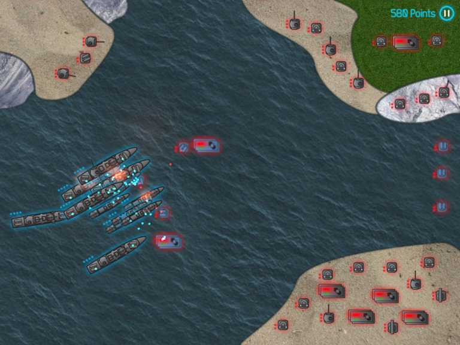
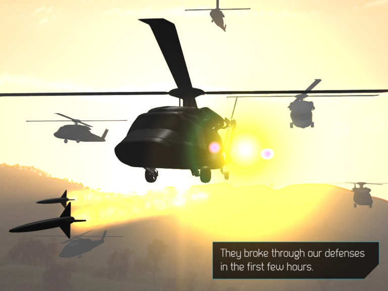
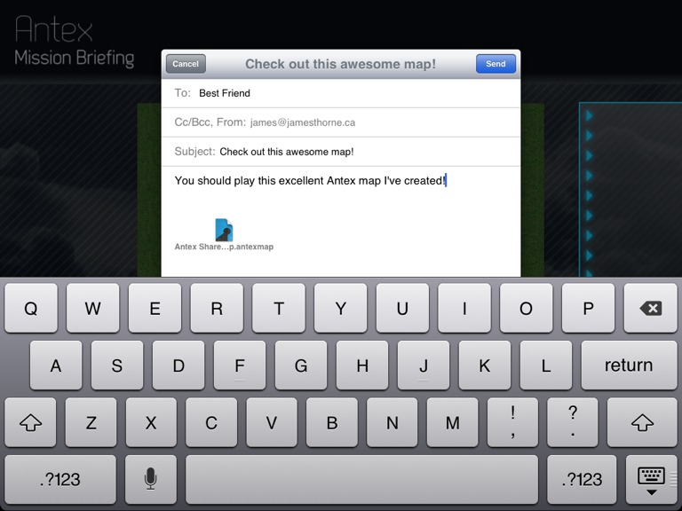

A Tactical Strategy Puzzle Game for iPad
In Antex, you command an army of hovercraft, tanks, trucks, ships, submarines and helicopters. Use your finger to draw a path for your forces, and watch as they lay waste to enemy defenses.
...unless the enemy stops you first! You have to be ready to adapt - use your tanks to shield your trucks, use submarines to infiltrate the enemy base, and use helicopters to fly over everything for that one strategic take-down.
Antex features unique puzzle-driven strategic gameplay. With limited forces, and no idea what's ahead, you have to use the right combination of force, subtlety, and quick thinking to stay alive.
- Includes an extensive story-driven single-player campaign
- Fight through 120 unique maps, each requiring a different strategy
- Command a variety of land, sea, air, and underwater forces, each with their own strengths and weaknesses
- Build reinforcements on-the-go with automated factories... as long as you have enough points!
- Rescue abandoned forces, and add them to your army!
- Move forces between related maps, building momentum as you go!
Story-Driven Campaign
We don't know who they are, where the came from, or what they wanted. They broke through our defenses in the first few hours. Within four days, our islands burned. The rest of the world remained silent, as always. And just as we reached our end, they stopped.
That was three years ago. We haven't heard from them since. They just sit, and wait, behind their impenetrable grey coastlines. But something is still very much alive. Waiting, watching...
Three days ago, we brought the tactical system back online, and started exploring. Today, we found a beach. It's just like any other beach, except that it's completely undefended. No guns, no cannons, no mortars. Nothing.
It's almost like an invitation.
And there's only one way to find out what happens next - play through the campaign!
Mission Designer
Antex also includes a full-featured mission designer, allowing you to create your own missions, and share them with your friends!
Use your fingers to draw grass, sand, ocean, and rocks, and then cover them with the very best automated defenses. Then plan your own forces and factories, and hit the play button!
Antex missions created in the Mission Designer can be shared by email, or downloaded from the Internet.